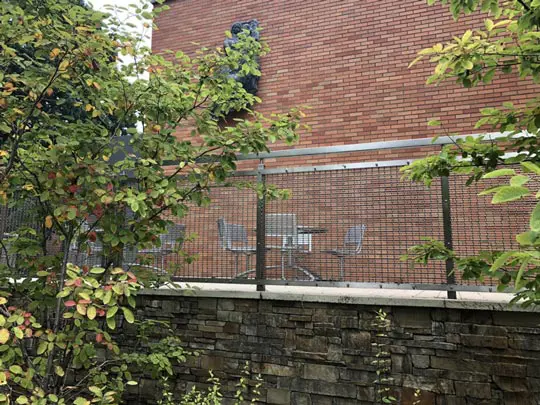

Steel Mesh & Expanded Metal Plastering for Masonry Wall Reinforcement
Learn how steel mesh and expanded metal reinforce masonry walls, preventing cracks and improving plaster adhesion in modern construction.
Read MoreReinforcement mesh, temporary fencing, safety barriers, and gabion structures engineered for commercial and residential building projects — trusted by contractors across 30+ countries.
Construction projects demand materials that combine strength, reliability, and speed of installation. From reinforced concrete structures to temporary site security, Kestrel Metal supplies a comprehensive range of wire mesh and fencing products that meet international building standards.
Our welded wire mesh is engineered for concrete reinforcement in slabs, walls, and pavements, while our temporary fencing systems provide rapid-deployment perimeter security for active construction sites. Every product is manufactured under ISO 9001 quality controls and backed by mill test certificates.

Specialized wire mesh and fencing products designed for the demanding conditions of modern construction sites.

Engineered welded wire mesh panels for reinforcing concrete slabs, walls, pavements, and precast elements. Manufactured from high-tensile steel wire in a range of diameters and aperture sizes to meet structural engineering specifications and building code requirements.
View Product
Rapid-deployment 3D panel fencing systems for securing active construction sites. Portable, reusable, and compliant with occupational safety regulations. Features anti-climb mesh design and powder-coated finish for weather resistance during extended project timelines.
View Product
Galvanized and stainless steel woven mesh for plaster reinforcement on interior walls, exterior facades, and ceiling surfaces. Prevents cracking, improves adhesion, and extends the service life of render systems in both residential and commercial construction.
View Product
Welded and woven gabion baskets for earth retention, slope stabilization, and architectural feature walls on construction sites. Provides durable, permeable, and environmentally integrated solutions for grading projects, embankments, and landscape architecture.
View ProductWe understand the unique challenges construction professionals face — and we engineer solutions to address each one.
Construction sites are prime targets for material theft and unauthorized entry, causing project delays and liability exposure.
Anti-climb temporary fencing with narrow mesh apertures and heavy-gauge steel provides secure perimeter protection that is fast to install and relocatable between project phases.
Reinforcement mesh must meet precise engineering specifications and building code requirements for load-bearing concrete structures.
Certified reinforcement mesh manufactured to international standards (ASTM, BS, EN) with full mill test certificates and consistent wire diameter tolerances.
Outdoor construction materials face rain, humidity, salt, and temperature cycling that can degrade untreated steel products.
Hot-dip galvanized and PVC-coated products provide 30+ year service life in outdoor environments, meeting the durability requirements of permanent installations.
Construction timelines leave no room for supply delays. Materials must arrive on site when needed, in the right quantities.
Large-scale production capacity with 100K+ units per month output and dedicated project logistics ensures on-time delivery for projects of any size.

Standards-compliant products manufactured to ASTM, BS, and EN specifications for reinforcement mesh and fencing.
Full material traceability with mill test certificates and quality inspection reports for every batch.
Custom panel dimensions cut to your exact specifications to minimize on-site cutting and material waste.
Hot-dip galvanizing with 70-275 g/m² zinc coating for long-term corrosion protection in outdoor environments.
Bulk supply capacity with 50,000+ tons annual output to support large-scale construction projects.
Global logistics support with container loading and export documentation handled in-house.
Our products meet the international standards and certifications relevant to this industry.
Quality management system ensuring consistent manufacturing standards across every production run.
Standard specification for carbon-steel wire and welded wire reinforcement for concrete.
British standard for steel fabric for reinforcement of concrete, covering mesh dimensions and tolerances.
European standard for steel for reinforcement of concrete, defining weldability and mechanical properties.

Learn how steel mesh and expanded metal reinforce masonry walls, preventing cracks and improving plaster adhesion in modern construction.
Read More
Complete technical reference covering wire diameters, aperture sizes, and material grades for welded wire mesh rolls.
Read More
Avoid these frequent installation errors that compromise fence integrity, safety, and long-term performance on construction sites.
Read MoreContact our engineering team for project-specific product recommendations, custom specifications, and competitive pricing.